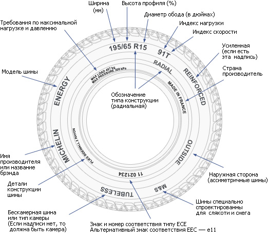
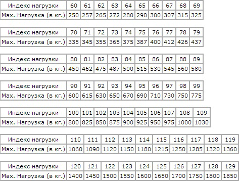
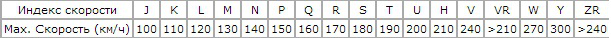

Расшифровка маркировки шин
Основные параметры маркировки приведены на следующем рисунке:

195/65 R15 91 T XL
195 — это ширина шины в мм.
65 — Пропорциональность, т.е. отношение высоты профиля к ширине. В нашем случае оно равно 65%. Проще говоря, при одинаковой ширине, чем больше этот показатель, тем шина будет выше и наоборот. Обычно эту величину называют просто — «профиль».
Например, можно рассмотреть две шины: 195/70 R14 и 195/65 R14 и вычислить их диаметр.
High
----- = Prop
Width
Расчет для первой шины:
High
----- = 0.70
195
Откуда высота = 0.70 * 195 = 136,5 мм. (это высота с одной стороны, ее еще надо умножать на 2).
Диаметр 14 дюймов равен 355,6 мм.
То есть, полная высота шины 195/70 R14 будет 136,5 * 2 + 355,6 = 628,6 мм
Расчет для второй шины:
High
----- = 0.65
195
Откуда высота = 0.65 * 195 = 126,75 мм. (это высота с одной стороны, ее еще надо умножать на 2).
Диаметр 14 дюймов равен 355,6 мм.
То есть, полная высота шины 195/65 R14 будет 126,75 * 2 + 355,6 = 609,1 мм
Таким образом, высота над землей оси автомобиля будет различаться на (628,6-609,1)/2 = 9,75 мм. То есть, разница около 1 см.
Поскольку профиль шины это величина относительная, то важно учитывать при подборе резины, что если вы вместо типоразмера 195/65 R15 захотите поставить автошины с размером 205/65 R15, то увеличится не только ширина покрышки, но и высота! Что в большинстве случаев недопустимо! (за исключением случаев, когда оба этих типоразмера указаны в книжке по эксплуатации авто). Точные данные по изменению внешних размеров колеса вы можете рассчитать в специальном шинном калькуляторе.
Если это соотношение не указано (например, 185/R14С), значит оно равно 80-82% и шина называется полнопрофильной. Усиленные шины с такой маркировкой обычно применяют на микроавтобусах и легких грузовичках, где очень важна большая максимальная нагрузка на колесо.
R — означает автошину с радиальным кордом (по сути, сейчас почти все шины делаются именно так).
Многие ошибочно полагают, что R- означает радиус шины, но это именно радиальная конструкция автошины. Бывает еще диагональная конструкция (обозначается буквой D), но в последнее время ее практически не выпускают, поскольку ее эксплуатационные характеристики заметно хуже.
15 — диаметр колеса (диска) в дюймах. (Именно диаметр, а не радиус! Это тоже распространенная ошибка). Это «посадочный» диаметр покрышки на диск, т.е. это внутренний размер шины или наружный у диска.
91 — индекс нагрузки. Это уровень предельно-допустимой нагрузки на одно колесо. Для легковых автомобилей он обычно делается с запасом и при выборе шин не является решающим значением, (в нашем случае ИН — 91 — 670 кг.). Для микроавтобусов и небольших грузовиков этот параметр очень важен и его обязательно необходимо соблюдать.
Таблица индексов нагрузки шины:

T — индекс скорости шины. Чем он больше, тем с большей скоростью вы можете ездить на данной покрышке, (в нашем случае ИС — Н — до 210 км/ч). Говоря про индекс скорости автошины хочется отметить, что этим параметром производитель покрышек гарантирует нормальную работу резины при постоянном движении машины с указанной скоростью в течении нескольких часов.
Таблица индексов скорости:

Маркировка американских шин:
Существуют две различные маркировки американских шин. Первая очень похожа на европейскую, только перед типоразмером ставится буквы «P» (Passanger — для легковой машины) или «LT» (Light Truck — лёгкий грузовик). Например: P 195/60 R 14 или LT 235/75 R15. И другая маркировка автошины, которая принципиально отличается от европейской.
Например: 31x10.5 R15 (соответствует европейскому типоразмеру 265/75 R15)
31 — внешний диаметр шины в дюймах.
10.5 — ширина шины в дюймах.
R — автошина радиальной конструкции (более старые модели автошин были с диагональной конструкцией).
15 — внутренний диаметр шины в дюймах.
Вообще говоря, если не считать непривычных нам дюймов, то американская маркировка автошин логичная и более понятная, в отличае от европейской, где высота профиля покрышки непостоянна и зависит от ширины автошины. А тут все просто с расшифровкой: первая цифра типоразмера — внешний диаметр, вторая — ширина, третья — внутренний диаметр.
Дополнительная информация указываемая в маркировке на боковине шины:
XL или Extra Load — усиленная шина, индекс нагрузки которой выше на 3 единицы, чем у обычных автошин того же типоразмера. Другими словами если на данной шине указан индекс нагрузки 91 с пометкой XL или Extra Load, то это значит, что при данном индексе, шина способна выдержать максимальную нагрузку в 670 кг вместо 615 кг (смотреть таблицу индексов нагрузки шин).
M+S или маркировка покрышки M&S (Mud + Snow) — грязь плюс снег и означает, что шины всесезонные или зимние. На многих летних покрышках для внедорожников указывается M&S. Однако эти шины нельзя эксплуатировать в зимнее время, т.к. зимние шины имеют совсем другой состав резины и рисунок протектора, а значок M&S указывает на хорошие показатели проходимости автошины.
All Season или AS всесезонные шины. Aw (Any Weather) — Любая погода.
Пиктограмма * (снежинка) — резина предназначена для использования её в суровых зимних условиях. Если на боковине шины нет этой маркировки, то эта автошина предназначена для использования только в летних условиях.
Aquatred, Aquacontact, Rain, Water, Aqua или пиктограмма (зонтик) — специальные дождевые шины.
Outside и Inside; ассиметричные шины, т.е. важно не перепутать какая сторона наружная, а какая внутренняя. При установке надпись Outside должна быть с наружной стороны автомобиля, а Inside — с внутренней.
RSC (RunFlat System Component) — шины RunFlat — это покрышки, на которых можно продолжать движение на автомобиле со скоростью не более 80 км/ч при ПОЛНОМ падении давления в шине (при проколе или порезе). На этих шинах, в зависимости от рекомендаций производителя, можно проехать от 50 до 150 км. Разные производители автошин используют различные обозначения технологии RSC. Например: Bridgestone RFT, Continental SSR, Goodyear RunOnFlat, Nokian Run Flat, Michelin ZP и т. д.
Rotation или стрелка эта маркировка на боковине шины означает направленную шину. При установке покрышки нужно строго соблюдать направление вращения колеса, указанное стрелкой.
Tubeless — бескамерная шина. При отсутствии данной надписи покрышка может использоваться только с камерой. Tube Type — обозначает, что эта покрышка обязательно должна эксплуатироваться только с камерой.
Max Pressure; максимально допустимое давление в шине. Max Load — максимально допустимая нагрузка на каждое колесо автомобиля, в кг.
Reinforced или буквы RF в типоразмере (например 195/70 R15RF) означают, что это усиленная шина (6 слоёв). Буква С в конце типоразмера (например 195/70 R15C) обозначает грузовую шину (8 слоёв).
Radial эта маркировка на резине в типоразмере означает, что это авторезина радиальной конструкции. Steel означает, что в конструкции шины присутствует металлический корд.
Буква E (в кружочке) — шина соответствует европейским требованиям ECE (Economic Commission for Europe). DOT (Department of Transportation — Министерство транспорта США) — американский стандарт качества.
Temperature А, В или С термостойкость авторезины при высоких скоростях на испытательном стенде (А — наилучший показатель).
Traction А, В или С — способность шины к торможению на влажном дорожном полотне.
Treadwear; относительный ожидаемый километраж пробега по сравнению со специальным стандартным тестом США.
TWI (Tread Wear Indiration) — указатели индикаторов износа протектора автошины. Маркировка на колесе TWI также может быть со стрелкой. Указатели располагаются равномерно в восьми или шести местах по всей окружности покрышки и показывают минимально допустимую глубину протектора. Индикатор износа выполняется в виде выступа с высотой 1.6 мм (минимальная величина протектора для легких автомобилей) и располагается в углублении протектора (как правило, в водоотводящих канавках).